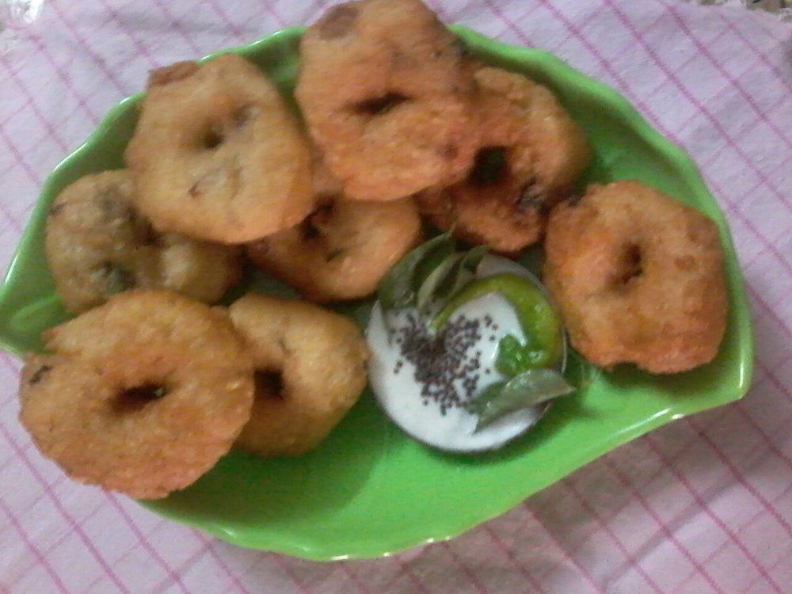

Contains: milk, mustard
Ingredients
Quantities for 4.
- 1 cup, skinned Urad Dal
- 2, finely chopped Green Chilli
- 2.5cm piece, finely chopped Ginger
- 1 tsp, coarsely crushed Black Pepper
- 2 sprigs, chopped Curry Leaves
- 1/4 tsp Asafoetidause compounded-free hing to keep this gluten-free
- 600g, whisked smooth Yogurtthick, fresh and not sour
- 100ml, cold Milkloosens the yogurt and keeps it mild
- 1 tsp Mustard Seeds
- 2, broken Dried Red Chilli
- 2 tbsp, chopped Coriander Leavesoptional
- 1/4 tsp, for dusting Chilli Powderoptional
- 500ml, for deep frying Neutral Oil
- 1.5 litres warm, for soaking the vadas Water
- to taste Salt
Cookware
stovetop, kadhai, blender
Checked against the ingredient list for ten allergens: milk, egg, fish, crustaceans, tree nuts, peanuts, sesame, mustard, soy and gluten. Brands vary, so read the label on anything new to you.
Before you start
- Soak the urad dal 3 hours. Any longer and the batter absorbs oil like a sponge.
- Grind the batter with as little water as you can manage. Ice cold water, a tablespoon at a time.
- Whisk the yogurt with the milk and salt an hour ahead and keep it refrigerated so it is properly cold when the vadas go in.
Method
- Drain the soaked dal thoroughly and grind to a thick, fluffy white batter, adding cold water a tablespoon at a time. A blob dropped in water should float.The float test is not optional. A batter that sinks makes dense, oily vadas.
- Beat the batter by hand for 2 minutes to aerate it, then fold in the green chilli, ginger, crushed pepper, chopped curry leaves, asafoetida and salt.
- Heat the oil to 170C. Wet your palm, flatten a lime-sized ball of batter on it and make a hole through the centre with your thumb.
- Slide the vadas into the oil, 4 at a time, and fry 4 to 5 minutes turning once, until pale gold, not dark.Fry these lighter than you would a standalone medu vada. They have to soften in yogurt later.
- Drain on paper, then drop the hot vadas straight into a bowl of warm salted water for 15 minutes.
- Lift each vada out and press it gently between your palms to squeeze out the water. It should feel like a wrung sponge.Squeeze firmly but slowly, or the vada tears in half.
- Arrange the vadas in a single layer in a shallow dish and pour the cold yogurt-milk mixture over them.
- Refrigerate at least 2 hours so the vadas drink up the yogurt and swell.
- Just before serving, heat 1 tbsp of the frying oil and crackle the mustard seeds, red chillies and remaining curry leaves, and pour it over.
- Dust with chilli powder, scatter the coriander and serve cold.
Storage
Best on the day it is assembled. Keeps 2 days refrigerated but the vadas slump and the yogurt turns sour after that. Never freeze. Serve straight from the fridge.
Nutrition Medium estimate
Medium protein: 17 g a serving, 16% of the calories
| Per serving566 g | Per 100 g | |
|---|---|---|
| Calories | 435 kcal | 77 kcal |
| Protein | 17.0 g | 3 g |
| Carbohydrate | 40.2 g | 7 g |
| of which sugars | 9.6 g | 2 g |
| Fibre | 8.3 g | 2 g |
| Fat | 24.0 g | 4 g |
| of which saturated | 5.6 g | 1 g |
| of which unsaturated | 17.0 g | 3 g |
Ingredients given to taste count as zero, so the real figures run a little higher. Nearest database match used for asafoetida, curry leaves, urad dal. Estimated from raw ingredients using USDA FoodData Central.
More like this: Vegetarian Indian recipes · Gluten-free Indian recipes · No onion no garlic recipes · Tamil Nadu recipes
Times, yields, allergens and nutrition are guidance. Use your own judgement on doneness and on storing. More in About.